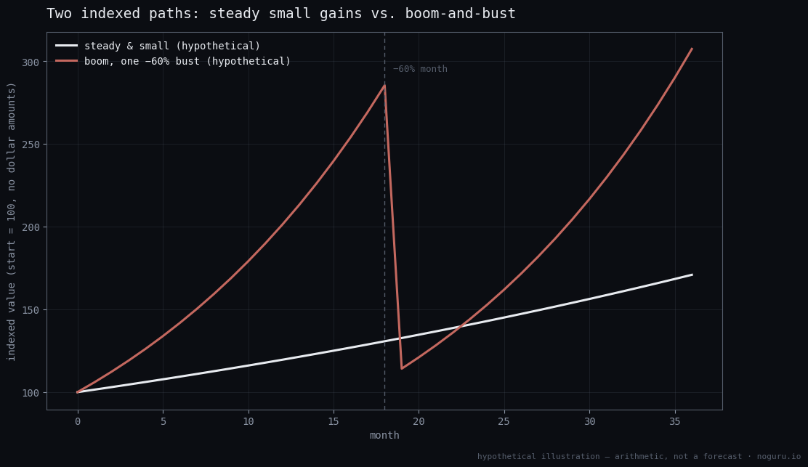

Trading Academy · Module 1 — Why slow wins · Lesson 4/4 · Lesson 4 of 22 in the curriculum · ~6 min read
Survive first: compounding needs a survivor
Compounding is the strongest force available to a trader, and it has one non-negotiable requirement: an account that is still there. Steady-small beats boom-bust not as a temperament or a virtue, but as multiplication.
Find something on this page
Read this lesson in context
This is the original public lesson portion. Its hypothetical examples teach general trading concepts. References to futures, stops, other strategies or older track-record formats are not statements of NoGuru’s current spot configuration.
Public reading
Compare two hypothetical traders over one year. A compounds a modest +2% every month. B is spectacular: +10% every month for eleven months — then one −60% month, a single visit to the leveraged wipeout that lesson 1.2 priced. Both paths are inventions for this arithmetic; neither is a forecast.
| Trader A (hypothetical) | Trader B (hypothetical) | |
|---|---|---|
| The twelve months | +2% every month | +10% for eleven months, one −60% |
| Average month | +2.0% | +4.2% |
| Year-end result | +26.8% | +14.1% |
Hypothetical paths, chosen for arithmetic. A: 1.02 12 = 1.268. B: 1.10 11 × 0.40 = 1.141.
Read the bottom two rows together. B's average month is more than twice A's — and B still finishes far behind, because an account does not experience the average of its months. It experiences the product , and multiplication shows no mercy to one bad factor. A single ×0.40 quietly cancels years of brilliance; a single ×0 cancels everything, permanently — there is no sequence of later returns that multiplies zero back into an account. Ruin is not a large loss. It is the end of compounding itself.
Ruin is not a large loss. It is the end of compounding itself.

That is the organising principle of this entire academy, stated once and early: survive first . The recovery curve of lesson 1.1 says deep holes cost years; this lesson says the deepest hole cannot be climbed at all. Everything that follows — sizing, portfolio heat, correlation — is machinery for making sure the multiplication never meets its fatal factor.
The full lesson charts both hypothetical paths month by month, explains the arithmetic-versus-geometric-mean gap in plain words (why volatile paths always pay less than their average suggests), makes "ruin is an absorbing state" precise, and shows with streak arithmetic how position sizing buys the number of attempts an edge needs before it can show up.
← Expectancy: why win rate isn't the score Fixed-fractional sizing: the 1-2% idea →
Original source risk note
Trading cryptocurrencies involves substantial risk of loss and is not suitable for every investor. The academy teaches method and arithmetic — it does not and cannot promise trading results. Nothing here is investment advice.